Erfahren Sie mehr über das Team hinter R.I.E.
und unserem Plan Gegensprechanlagen zu digitalisieren.
Erfahren Sie mehr über die Aufgabe, die wir uns gestellt haben.
und wie wir diese lösen wollen.
Erfahren Sie mehr über den Fortschritt, den wir bisher gemacht haben.
und was wir noch vorhaben.